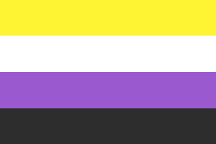

---------------------------------------------------------------------------------------------------------
Nonbinary Linuks is a LFS Based Linux distro on the hyprland WM to provide a lightweight and secure experience for tuff nonbinary linuksers
Through open source components such as the Linux Kernel, GNU Coreutils, hyprland (version 0.54), openrc and stuff like that i guess
el github page on issues tab or something
despite the name "nonbinary linuks," this distro is for anyone to use (assuming you know what a CLI is), you should try the best distro to exist!